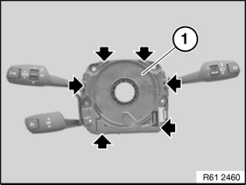
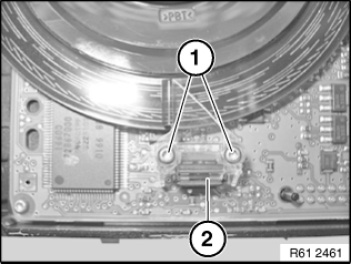
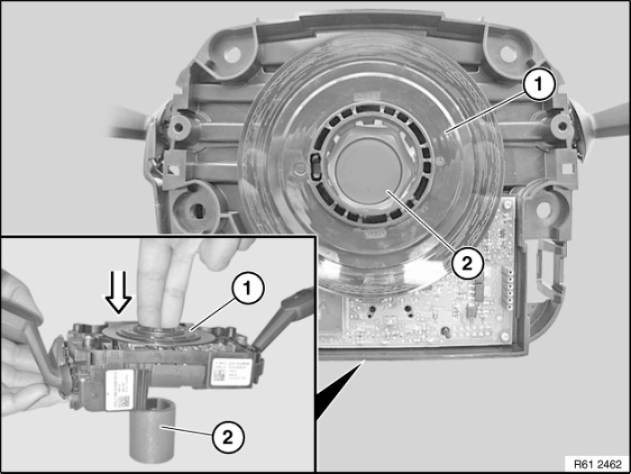
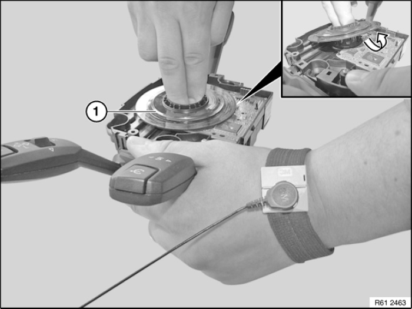
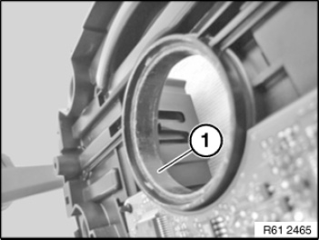
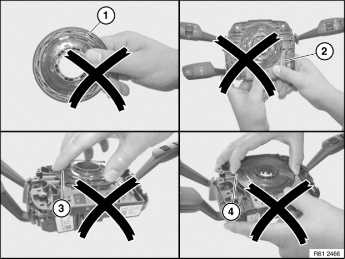
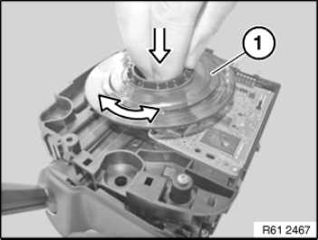
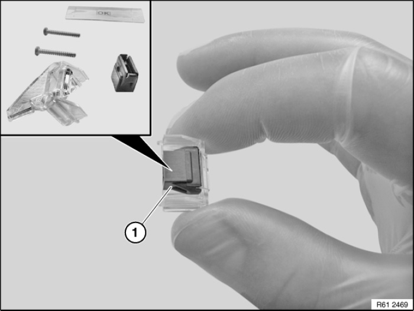
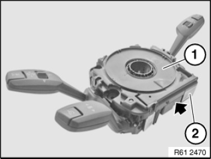
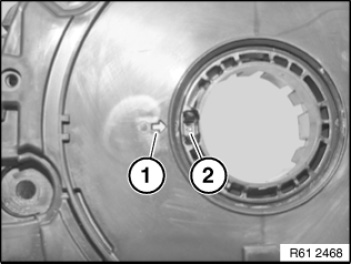

61 31 009 Repairing Steering Column Switch Cluster (SZL)
61 31 009 Repairing Steering Column Switch Cluster (SZL):

WARNING: Move wheels into straight-ahead position and do not alter this position during the repair work.

IMPORTANT: Read and comply with notes on protection against electrostatic discharge (ESP protection).

Necessary preliminary tasks:
- Remove volute spring cassette
- Spread antistatic mat
- Use antistatic wrist trap with connecting line

Note on ordering:
- Workshop equipment
- Workshop equipment catalogue
- Order number 61 31 9 141 875
IMPORTANT: Extreme cleanliness is required.

NOTE: Installation is described separately.
Removal:
- Unlock retaining lugs on upper housing section (1) with a suitable tool.
- Remove upper housing section.

- Release screws (1) in optical element (2).
IMPORTANT: Touch only the optical element.
NOTE: After removal, render optical element unusable and dispose of it in the appropriate manner.

Unclip encoded disc (1) from rear of steering column switch cluster with plastic tube (2) supplied for the purpose.
In this process, hold encoded disc by inserting two fingers in the hole.

To prevent damage, tilt encoded disc (1) away from the printed circuit board when removing.
IMPORTANT: It is not permissible to clean the bearing points.

IMPORTANT: Make sure that encoded disc, optical element and printed circuit board do not come into contact with grease.
Apply grease supplied for the purpose to friction face (1) of bearing race of front of steering column switch cluster.
Installation:
IMPORTANT:
Thoroughly clean your hands before installation.
Before installing the new parts, put on gloves and hair net included in the repair kit.

IMPORTANT: Not permitted.
- Do not touch encoded disc (1) with your fingers.
- Do not touch printed circuit board (2).
- Do not apply pressure to encoded disc (3).
- Do not touch sides of encoded disc (4).

- Hold encoded disc (1) by inserting two fingers in the hole.
- Position encoded disc centred in fixture and clip it in.
- Turn encoded disc to and fro to spread the grease over the friction face

Assembly optical element (1) from individual parts included in the repair kit.

- Secure optical element (2) with screws (1).
- Tightening torque: 0.26 Nm.

- Clip upper housing section (1) into place.
- After inserting coil spring cassette, affix "CDS" label close to part-number label (2).
Installation note:
Make sure retaining lugs are correctly engaged.

Installation note:
Mark (1) and mark (2) must point to each other.
Carry out steering angle sensor adjustment.

Carry out vehicle programming/encoding.